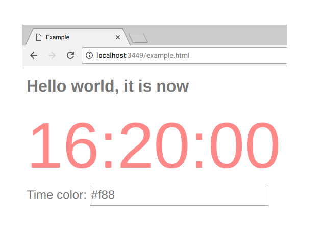

Initial Code Walk-through
At this point, you are about 55% of the way to understanding re-frame. You have:
- an overview of the 6 domino process from this repo's README
- an understanding of app state (from the previous tutorial)
In this tutorial, we look at re-frame code. By the end of it, you'll be at 70% knowledge, and ready to start coding an app.
What Code?
This repo contains an /examples application called "simple",
which contains 70 lines of code. We'll look at every line of the file.
This app:
- displays the current time in a nice big, colourful font
- provides a single text input field, into which you can type a hex colour code, like "#CCC", used for the time display
When it is running, here's what it looks like:

To run the code yourself:
- Install Java 8
- Install leiningen (http://leiningen.org/#install)
Then:
git clone https://github.com/Day8/re-frame.gitcd re-frame/examples/simplelein do clean, figwheel- wait a minute and then open http://localhost:3449/example.html
So, what's just happened? The ClojureScript code under /src has been compiled into javascript and
put into /resources/public/js/client.js which is loaded into /resources/public/example.html (the HTML you just opened)
Figwheel provides for hot-loading, so you can edit the source code (under /src)and watch the loaded HTML change.
Namespace
Because this example is tiny, the source code is in a single namespace: https://github.com/Day8/re-frame/blob/master/examples/simple/src/simple/core.cljs
Within this namespace, we'll need access to both reagent and re-frame.
So, at the top, we start like this:
(ns simple.core
(:require [reagent.core :as reagent]
[re-frame.core :as rf]))
Data Schema
Now, normally, I'd strongly recommended that you write a quality schema
for your application state (the data stored in app-db). But,
here, to minimise cognitive load, we'll cut that corner.
But ... we can't cut it completely. You'll still need an
informal description, and here it is ... for this app app-db will contain
a two-key map like this:
{:time (js/Date.) ;; current time for display
:time-color "#f88"} ;; the colour in which the time should be shown
re-frame itself owns/manages app-db (see FAQ #1), and it will
supply the value within it (the two-key map described above)
to your various handlers as required.
Events (domino 1)
Events are data.
re-frame uses a vector format for events. For example:
[:delete-item 42]
The first element in the vector is a keyword which identifies the kind of event. The
further elements are optional, and can provide additional data
associated with the event. The additional value above, 42, is
presumably the id of the item to delete.
Here are some other example events:
[:admit-to-being-satoshi false]
[:dressing/put-pants-on "velour flares" {:method :left-leg-first :belt false}]
(For non-trivial applications, the kind keyword will be namespaced.)
Rule: events are pure data. No sneaky tricks like putting callback functions on the wire. You know who you are.
dispatch
To send an event, call dispatch with the event vector as argument:
(rf/dispatch [:event-id value1 value2])
In this "simple" app, a :timer event is dispatched every second:
(defn dispatch-timer-event
[]
(let [now (js/Date.)]
(rf/dispatch [:timer now]))) ;; <-- dispatch used
;; call the dispatching function every second
(defonce do-timer (js/setInterval dispatch-timer-event 1000))
This is an unusual source of events. Normally, it is an app's UI widgets which
dispatch events (in response to user actions), or an HTTP POST's
on-success handler, or a websocket which gets a new packet.
After dispatch
dispatch puts an event into a queue for processing.
So, an event is not processed synchronously, like a function call. The processing happens later - asynchronously. Very soon, but not now.
The consumer of the queue is a router which looks after the event's processing.
The router:
- inspects the 1st element of an event vector
- looks for the event handler (function) which is registered for this kind of event
- calls that event handler with the necessary arguments
As a re-frame app developer, your job, then, is to write and register an event handler (function) for each kind of event.
Event Handlers (domino 2)
Collectively, event handlers provide the control logic in a re-frame application.
In this application, 3 kinds of event are dispatched:
:initialize
:time-color-change
:timer
3 events means we'll be registering 3 event handlers.
Two ways to register
Event handler functions take two arguments coeffects and event,
and they return effects.
Conceptually, you can think of coeffects as being "the current state of the world".
And you can think of event handlers has computing and returning changes (effects) based on
"the current state of the world" and the arriving event.
Event handlers can be registered via either reg-event-fx
or reg-event-db (-fx vs -db):
reg-event-fxcan take multiplecoeffectsand can return multipleeffects, whilereg-event-dballows you to write simpler handlers for the common case where you want them to take only onecoeffect- the current app state - and return oneeffect- the updated app state.
Because of its simplicity, we'll be using the latter here: reg-event-db.
reg-event-db
We register event handlers using re-frame's reg-event-db:
(rf/reg-event-db
:the-event-id
the-event-handler-fn)
The handler function you provide should expect two arguments:
db, the current application state (the value contained inapp-db)v, the event vector (what was given todispatch)
So, your function will have a signature like this: (fn [db v] ...).
Each event handler must compute and return the new state of
the application, which means it returns a
modified version of db (or an unmodified one, if there are to be no changes to the state).
:initialize
On startup, application state must be initialized. We
want to put a sensible value into app-db, which starts out containing {}.
So a (dispatch [:initialize]) will happen early in the
app's life (more on this below), and we need to write an event handler
for it.
Now this event handler is slightly unusual because not only does it not care about
any event information passed in via the event vector, but it doesn't
even care about the existing value in db - it just wants to plonk
a completely new value:
(rf/reg-event-db ;; sets up initial application state
:initialize
(fn [_ _] ;; the two parameters are not important here, so use _
{:time (js/Date.) ;; What it returns becomes the new application state
:time-color "#f88"})) ;; so the application state will initially be a map with two keys
This particular handler fn ignores the two parameters
(usually called db and v) and simply returns
a map literal, which becomes the application
state.
For comparison, here's how we would have written this if we'd cared about the existing value of db:
(rf/reg-event-db
:initialize
(fn [db _] ;; we use db this time, so name it
(-> db
(assoc :time (js/Date.))
(assoc :time-color "#f88")))
:timer
Earlier, we set up a timer function to (dispatch [:timer now]) every second.
Here's how we handle it:
(rf/reg-event-db ;; usage: (rf/dispatch [:timer a-js-Date])
:timer
(fn [db [_ new-time]] ;; <-- de-structure the event vector
(assoc db :time new-time))) ;; compute and return the new application state
Notes:
- the
eventwill be like[:timer a-time], so the 2ndvparameter destructures to extract thea-timevalue - the handler computes a new application state from
db, and returns it
:time-color-change
When the user enters a new colour value (via an input text box):
(rf/reg-event-db
:time-color-change ;; usage: (rf/dispatch [:time-color-change 34562])
(fn [db [_ new-color-value]]
(assoc db :time-color new-color-value))) ;; compute and return the new application state
Effect Handlers (domino 3)
Domino 3 realises/puts into action the effects returned by event handlers.
In this "simple" application, our event handlers are implicitly returning only one effect: "update application state".
This particular effect is accomplished by a re-frame-supplied
effect handler. So, there's nothing for us to do for this domino. We are
using a standard re-frame effect handler.
And this is not unusual. You'll seldom have to write effect handlers, but in a later
tutorial we'll show you more about how to do so when you need to.
Subscription Handlers (domino 4)
Subscription handlers, or query functions, take application state as an argument
and run a query over it, returning something called
a "materialised view" of that application state.
When the application state changes, subscription functions are re-run by re-frame, to compute new values (new materialised views).
Ultimately, the data returned by query functions is used
in the view functions (Domino 5).
One subscription can source data from other subscriptions. So it is possible to create a tree of dependencies.
The Views (Domino 5) are the leaves of this tree. The tree's
root is app-db and the intermediate nodes between the two
are computations being performed by the query functions of Domino 4.
Now, the two examples below are trivial. They just extract part of the application state and return it. So, there's virtually no computation. A more interesting tree of subscriptions, and more explanation, can be found in the todomvc example.
reg-sub
reg-sub associates a query id with a function that computes
that query, like this:
(rf/reg-sub
:some-query-id ;; query id (used later in subscribe)
a-query-fn) ;; the function which will compute the query
Then later, a view function (domino 5) subscribes to a query like this:
(subscribe [:some-query-id]), and a-query-fn will be used
to perform the query over the application state.
Each time application state changes, a-query-fn will be
called again to compute a new materialised view (a new computation over app state)
and that new value will be given to all view functions which are subscribed
to :some-query-id. These view functions will then be called to compute the
new DOM state (because the views depend on query results which have changed).
Along this reactive chain of dependencies, re-frame will ensure the necessary calls are made, at the right time.
Here's the code:
(rf/reg-sub
:time
(fn [db _] ;; db is current app state. 2nd unused param is query vector
(:time db))) ;; return a query computation over the application state
(rf/reg-sub
:time-color
(fn [db _]
(:time-color db)))
Like I said, both of these queries are trivial. See todomvc.subs.clj for more interesting ones.
View Functions (domino 5)
view functions turn data into DOM. They are "State in, Hiccup out" and they are Reagent
components.
An SPA will have lots of view functions, and collectively,
they render the app's entire UI.
Hiccup
Hiccup is a data format for representing HTML.
Here's a trivial view function which returns hiccup-formatted data:
(defn greet
[]
[:div "Hello viewers"]) ;; means <div>Hello viewers</div>
And if we call it:
(greet)
;; ==> [:div "Hello viewers"]
(first (greet))
;; ==> :div
Yep, that's a vector with two elements: a keyword and a string.
Now, greet is pretty simple because it only has the "Hiccup Out" part. There's no "Data In".
Subscribing
To render the DOM representation of some part of the app state, view functions must query
for that part of app-db, and that means using subscribe.
subscribe is always called like this:
(rf/subscribe [query-id some optional query parameters])
There's only one (global) subscribe function and it takes one argument, assumed to be a vector.
The first element in the vector (shown above as query-id) identifies the query,
and the other elements are optional
query parameters. With a traditional database a query might be:
select * from customers where name="blah"
In re-frame, that would be done as follows:
(subscribe [:customer-query "blah"]),
which would return a ratom holding the customer state (a value which might change over time!).
Because subscriptions return a ratom, they must always be dereferenced to obtain the value. This is a recurring trap for newbies.
The View Functions
This view function renders the clock:
(defn clock
[]
[:div.example-clock
{:style {:color @(rf/subscribe [:time-color])}}
(-> @(rf/subscribe [:time])
.toTimeString
(clojure.string/split " ")
first)])
As you can see, it uses subscribe twice to obtain two pieces of data from app-db.
If either change, re-frame will re-run this view function.
And this view function renders the input field:
(defn color-input
[]
[:div.color-input
"Time color: "
[:input {:type "text"
:value @(rf/subscribe [:time-color]) ;; subscribe
:on-change #(rf/dispatch [:time-color-change (-> % .-target .-value)])}]]) ;; <---
Notice how it does BOTH a subscribe to obtain the current value AND
a dispatch to say when it has changed.
It is very common for view functions to run event-dispatching functions. The user's interaction with the UI is usually the largest source of events.
And then a view function to bring the others together, which contains no
subscriptions or dispatching of its own:
(defn ui
[]
[:div
[:h1 "Hello world, it is now"]
[clock]
[color-input]])
Note: view functions tend to be organized into a hierarchy, often with
data flowing from parent to child via
parameters. So, not every view function needs a subscription. Very often
the values passed in from a parent component are sufficient.
Note: view functions should never directly access app-db. Data is
only ever sourced via subscriptions.
Components Like Templates?
view functions are like the templates you'd find in
Django, Rails, Handlebars or Mustache -- they map data to HTML -- except for two massive differences:
- you have the full power of ClojureScript available to you (generating a Clojure data structure). The downside is that these are not "designer friendly" HTML templates.
- these templates are reactive. When their input Signals change, they
are automatically rerun, producing new DOM. Reagent adroitly shields you from the details, but
the renderer of any
componentis wrapped by areaction. If any of the "inputs" to that renderer change, the renderer is rerun.
Kick Starting The App
Below, run is called to kick off the application once the HTML page has loaded.
It has two tasks:
- Load the initial application state
- Load the GUI by "mounting" the root-level function in the hierarchy
of
viewfunctions -- in our case,ui-- onto an existing DOM element.
(defn ^:export run
[]
(rf/dispatch-sync [:initialize]) ;; puts a value into application state
(reagent/render [ui] ;; mount the application's ui into '<div id="app" />'
(js/document.getElementById "app")))
After run is called, the app passively waits for events.
Nothing happens without an event.
When it comes to establishing initial application state, you'll
notice the use of dispatch-sync, rather than dispatch. This is a simplifying cheat
which ensures that a correct
structure exists in app-db before any subscriptions or event handlers run.
Summary
Your job, when building an app, is to:
- design your app's information model (data and schema layer)
- write and register event handler functions (control and transition layer) (domino 2)
- (once in a blue moon) write and register effect and coeffect handler functions (domino 3) which do the mutative dirty work of which we dare not speak in a pure, immutable functional context. Most of the time, you'll be using standard, supplied ones.
- write and register query functions which implement nodes in a signal graph (query layer) (domino 4)
- write Reagent view functions (view layer) (domino 5)
Next Steps
You should now take time to carefully review the
todomvc example application.
On the one hand, it contains a lot of very helpful practical advice. On the other, it does
use some more advanced features like interceptors which are covered later in the docs.
After that, you'll be ready to write your own code. Perhaps you will use a
template to create your own project:
Client only: https://github.com/Day8/re-frame-template
Full Stack: http://www.luminusweb.net/
Obviously, you should also go on to read the further documentation.
Previous: app-db (Application State) Up: Index Next: The API